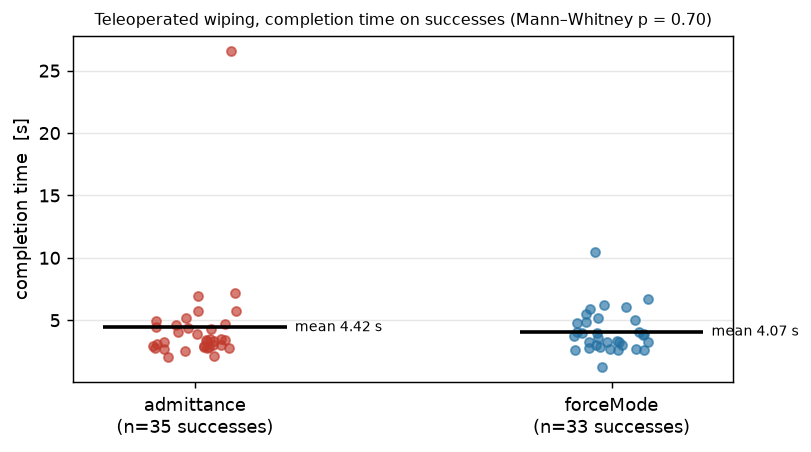
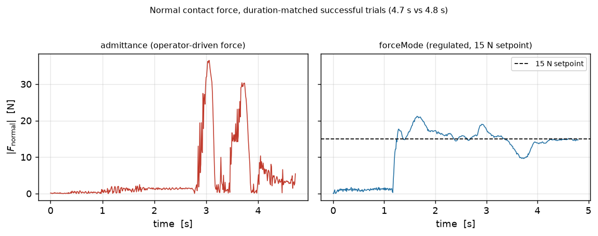

Baseline validation for the wiping experiments
The paper's wiping baseline runs the stock UR3e under our Cartesian admittance controller. This study swaps only
the low-level controller, holding the rig, operator, and task fixed, and compares it against
UR's native forceMode. The two are statistically indistinguishable in both completion time
(Mann–Whitney p = 0.70) and success rate (Fisher's exact
p = 0.78), so the stock UR3e's contact performance in the paper reflects its hardware rather
than the control loop.
| Metric | admittance | forceMode |
|---|---|---|
| Success rate | 35/42 (83%) | 33/42 (79%) |
| Faults / timeouts | 7 / 0 | 9 / 0 |
| Completion time, successes (mean ± std) | 4.42 ± 3.99 s (n=35) | 4.07 ± 1.67 s (n=33) |
| Completion time, median | 3.39 s | 3.77 s |
| Mean |Fnormal| in contact | 11.5 ± 4.1 N | 15.7 ± 4.0 N |
| In-wipe force std | 8.96 N | 4.99 N |
| Peak |Fnormal| (mean of per-trial peaks) | 34.5 N | 26.7 N |
| Force setpoint | none (operator-driven) | 15 N (regulated) |

Completion time on successful trials. The one admittance outlier at 26.5 s is a trial where the operator barely pressed (5.1 N mean, the lowest of any trial); it alone raises the admittance std from 1.25 to 3.99 s. The medians, 3.39 vs 3.77 s, show the same absence of separation as the test statistic.

Normal contact force for a duration-matched pair of successful trials (4.7 vs 4.8 s, full trials including approach). The operator-driven admittance trace is spiky; forceMode regulates about its 15 N setpoint. Both erase the dot in the same time.
UR3e leader–follower teleoperation over RTDE, single operator. Each trial rebuilds the controller fresh (auto-home and F/T re-zero) before the timer starts. Wrench and TCP pose are recorded at 100 Hz from the UR3e's built-in tool-flange F/T estimate, re-biased at each controller build; force metrics use in-contact samples only (|Fnormal| above 3 N on base-Z, the same axis as the press force). forceMode ran with a 15 N press, compliant speed 0.05, damping 0.1, gain scaling 0.8. The robot ran on its reduced safety-limits level. Fault detection covers protective stop, e-stop, abnormal safety mode, control-program death, and forceMode's silent in-singularity refusal. Two of forceMode's nine faults were such refusals, a limitation of force mode in certain arm configurations that the admittance loop does not share.
Completion times here are teleoperated times for a single dot, and are not comparable to the autonomous policy results in the paper, whose wiping task uses scribbles of various sizes and dots at random locations. Only the relative admittance-vs-forceMode comparison carries over.
Supports the baseline-validation claim in the paper's Wiping Experiments section. See also the Franka wiping experiment and the project page.